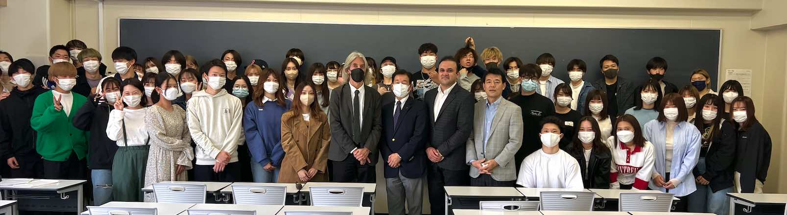

Joint Research
We are open to joint research and consulting with companies and public entities that share objectives with TRIES. Please contact us for details.
Activities with Students
Special Lecture in SDGs
- (2022/04/19) Troy Sternberg of the University of Oxford visited Tokai University and gave a special lecture to undergraduate students on "Central Asia & Sustainable Development Goals: politics, economics, and environment."
